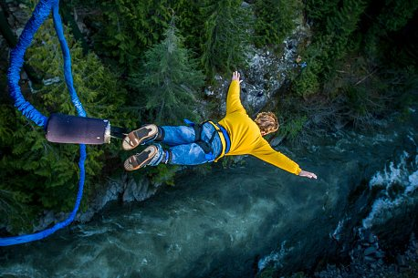

<!DOCTYPE html>
<html lang="en">

<head>
    <meta name="description" content="This is my personal page of inspiring ideas and my favorite things">
    <meta charset="UTF-8">
    <meta http-equiv="X-UA-Compatible" content="IE=edge">
    <meta name="viewport" content="width=device-width, initial-scale=1.0">
    <title> Bucket List Inspiration </title>
    <link rel="apple-touch-icon" sizes="180x180" href="images/apple-touch-icon.png">
    <link rel="icon" type="image/png" sizes="32x32" href="images/favicon-32x32.png">
    <link rel="icon" type="image/png" sizes="16x16" href="images/favicon-16x16.png">
    <link rel="manifest" href="images/site.webmanifest">
</head>

<body>
</body>

</html>
<header>
    <nav>
        <ul>
            <li><a>Home</a></li>
            <li><a href="about/">About</a></a></li>
            <li><a href="contact/">Contact</a></li>
        </ul>
    </nav>
</header>

<h1>Bucket List Inspiration</h1>
<p>In Case Your Life Gets Boring</p>

<main>
    <article>
        <h2>Just Because Life's Boring, Doesn't Mean You Have To Be!

            <figure>
                
                <figcaption>Bungee Jumper</figcaption>
            </figure>

            <p>Bungee jumping is an exhilarating and thrilling adventure that provides a rush of adrenaline like
                no
                other. It is a unique experience that allows you to push your boundaries and face your fears.
                You'll be
                harnessed to a bungee cord and jump from a tall structure, such as a bridge or platform, and
                experience
                the feeling of freefalling before the bungee cord snaps you back up. The sensation of falling
                and
                bouncing is indescribable and one that you'll never forget. It's a great way to experience the
                outdoors
                and challenge yourself in a safe and controlled environment. If you're looking for an exciting
                and
                memorable experience, bungee jumping is definitely worth trying.</p>
    </article>
    <article>
        </h2>The Benefits of Bungee Jumping</h2>
        <p> 1. Increases adrenaline: Bungee jumping is a high-intensity activity that increases adrenaline levels,
            providing an instant boost of energy and excitement.

            <em>2. Improves mental health: The rush of adrenaline and endorphins released during bungee jumping can help
                alleviate symptoms of depression and anxiety.</em>

            3. Enhances self-confidence: Bungee jumping requires facing and overcoming fears, which can help build
            self-confidence and self-esteem.
        </p>
        </p>
    </article>
</main>
<aside>
    <h2>Health Requirements For Bungee Jumping</h2>
    <p><strong>Keep in mind that bungee jumping is a physically demanding activity, so it's important to make sure you
            are in good health and have consulted with a doctor before participating.</strong></p>
</aside>
<footer>
    <p>Text generated by ChatGPT; image by iStock
</footer>
</body>

</html>